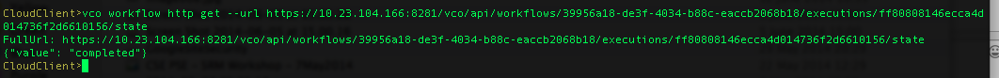

CloudClient command can be used to get JSON data from VCO, for example to check a workflow status:
vco workflow http get --url https://10.23.104.166:8281/vco/api/workflows/39956a18-de3f-4034-b88c-eaccb2068b18/executions/ff80808146ecca4d014736f2d6610156/state.
